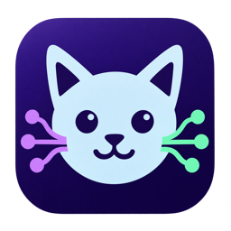

SwiftUI
macOS
macOS 14 or later. The archive holds an ad hoc signed app bundle. Git must be installed.
Download for macOS
KitGit github.com/sianachi/KitGitSwiftUI
macOS 14 or later. The archive holds an ad hoc signed app bundle. Git must be installed.
Download for macOSTk Desktop
The packaged engine runs without Swift. Needs Git, Python with Tk, and XWayland on Omarchy.
Download for LinuxTk Desktop
Extract and open KitGit.cmd. Needs Git, Python with Tcl/Tk, and the Swift 6.4.2 runtime.
Download for Windows